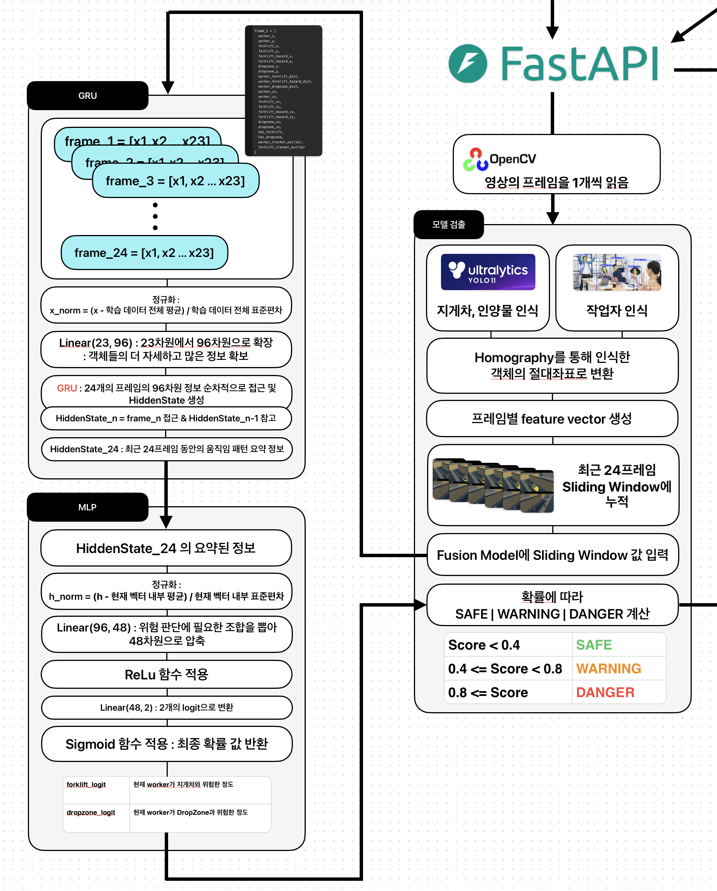
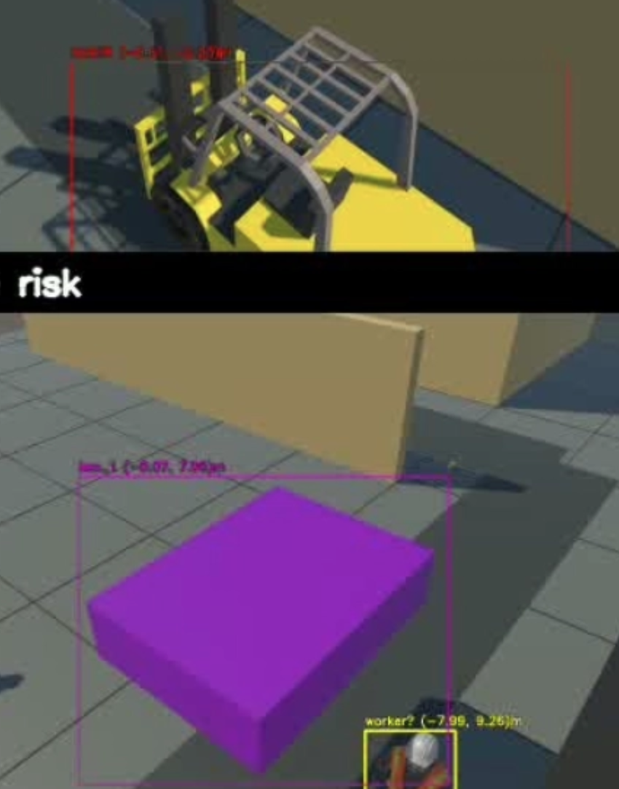
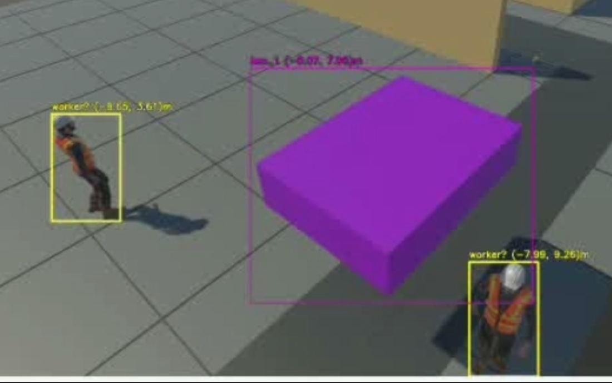
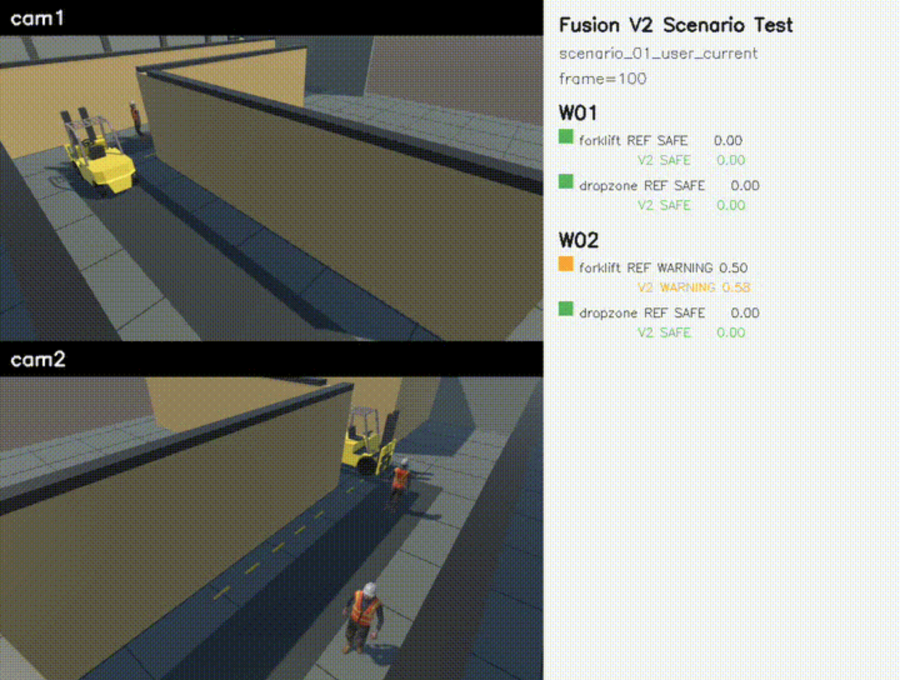

개요
공장 내 작업자와 지게차가 서로 직접 보이지 않는 사각지대 충돌 위험이 존재합니다.
두 대의 RTSP 카메라 영상을 멀티뷰로 입력하고, 검출된 객체 위치를 ArUco Homography 기반 BEV 절대좌표계로 통합했습니다.
좌표 시퀀스를 GRU 기반 Fusion Model에 입력해 실시간 충돌 위험을 Warning / Danger 단계로 예측했습니다.
역할
-
01
Unity 공장 사각지대 시나리오와 cam1 / cam2 멀티뷰 입력 환경 구성
-
02
FFmpeg + MediaMTX 기반 RTSP 스트리밍 파이프라인 구축
-
03
YOLO-Pose 작업자 검출과 Custom YOLO 지게차/인양물 검출 구현
-
04
ArUco Homography 기반 픽셀 좌표를 BEV 절대좌표로 변환
-
05
거리, 진행 방향, TTC, FH 기준점 기반 Warning / Danger 판단 로직 구현
-
06
병렬 처리와 pose cache 적용으로 3.145 FPS -> 10.148 FPS 개선
-
07
사고 로그 저장, snapshot 저장, MQTT 알림, 리포트 생성까지 E2E 검증
-
08
PostgreSQL 복합 인덱스로 사고 로그 날짜 검색 p50 0.097ms 달성
프로젝트 시연


시스템 아키텍처



적용한 추론 모델
Custom YOLO

- YOLO11n 계열 detect 커스텀 모델
- 탐지 클래스: forklift, box_1
- bbox 기준점을 절대좌표로 변환해 Fusion 모델 입력으로 사용
YOLO-Pose

- YOLO11n-pose 기반 작업자 검출
- 탐지 클래스: person(worker)
- 17개 keypoint를 추출해 작업자 위치를 절대좌표로 변환
Fusion Model

- V1: 규칙 기반 + TTC + FH + DropZone 조건
- V2: 24프레임 좌표 window 기반 GRU 위험 예측
- 좌표 거리와 미래 12프레임 위험 기준으로 확장 평가
- V2는 V1과 동일한 규칙 평가셋이 아니라 절대좌표 기반 geometry_future 라벨로 구성한 별도 평가셋에서 측정
개선 사항
단일 카메라만으로 사각지대 충돌 위험 판단의 어려움
상황 1- Cam1 또는 Cam2 단일 영상 기준 위치 관계 판단 한계
- 사각지대 내 지게차-작업자 충돌 위험 산정 불안정
- 두 카메라 검출 결과의 ArUco Homography 기반 BEV 절대 좌표 변환
- 하나의 BEV 평면 기준 충돌 위험 계산 구조
멀티뷰 BEV 통합으로 단일 카메라 사각지대 판단 한계 를 보완하고, 동일 좌표계 기반 충돌 위험 산정 구조를 확보했습니다.
카메라 별 좌표 오차
상황 2- Cam1 / Cam2 간 동일 객체 절대좌표 불일치
- BEV 상 객체 위치 신뢰도 저하
- 카메라별 4개 ArUco Marker 기준 Homography 재생성
- cv2.findHomography 기반 픽셀 좌표의 BEV 절대좌표 변환
- 최종 캘리브레이션 기준 평균 재투영 오차 2.72e-7m ~ 4.58e-7m
카메라별 좌표 보정으로 BEV 위치 신뢰도를 높이고, 평균 재투영 오차 2.72e-7m ~ 4.58e-7m 수준의 좌표 정합성을 확보했습니다.
작업자 인식 불안정
상황 3- 일부 시나리오의 작업자 bbox / pose 검출 불안정
- Fusion 모델 작업자 입력 누락에 따른 위험 예측 실패
- YOLO11s-pose 적용 및 pose 입력 크기 640 유지
- 카메라 위치와 FOV 조정을 통한 작업자 프레임 점유율 확보
- 충돌 시나리오 3개, 총 45회 벤치마크 기준 작업자 detection 확률 1.00
작업자 검출 안정화로 Fusion 입력 누락을 줄이고, 45회 벤치마크 기준 작업자 detection 확률 1.00 을 확보했습니다.
위험 알림 지연
상황 4- 지게차 bbox 중심점 기준 위험도 계산
- 실제 충돌 가능성이 높은 전방부 기준점 부재
- Warning / Danger 판단 시점 지연
- 이전/현재 프레임 좌표 기반 진행 방향 벡터 추정
- 진행 방향 앞쪽 FH(Front Hazard) 기준점 추가
- FH offset 1.0m 적용 후 Danger 시점 최대 0.7s, 최소 0.15s 단축
FH 기준점 도입으로 실제 충돌 가능성이 높은 전방부를 기준으로 위험을 판단하고, Danger 판단 시점 최대 0.7s 단축 을 달성했습니다.
실시간 처리 성능 부족
상황 5- cam1 pose, cam2 pose, custom YOLO, fusion 순차 처리
- 단일 루프 중심 추론 구조로 인한 실시간성 부족
- 초기 성능 평균 3.145 FPS, frame당 0.320s
- 카메라 단위 병렬 처리와 모델 단위 병렬 처리 적용
- custom YOLO 입력 크기 640 -> 512 조정
- pose 2프레임 1회 추론 및 cache 재사용
- 45회 벤치마크 기준 평균 10.148 FPS, frame당 98.966ms
병렬 처리와 캐시 재사용으로 실시간 처리 성능을 3.145 FPS -> 10.148 FPS 로 개선하고, frame time을 0.320s에서 98.966ms 수준으로 줄였습니다.
| 단계 | 내용 | FPS | 직전 대비 FPS 향상 | 1 frame 처리시간 | 직전 대비 처리시간 감소 |
|---|---|---|---|---|---|
| 0 | 초기 serial 처리 | 3.145 FPS | - | 0.320s | - |
| 1 | 카메라별 병렬 처리 | 5.488 FPS | +74.5% | 0.183s | 43.0% 감소 |
| 2 | 모델별 병렬 처리 | 6.335 FPS | +15.4% | 0.158s | 13.5% 감소 |
| 3 | custom YOLO 이미지 크기 조정 | 7.364 FPS | +16.2% | 0.136s | 14.2% 감소 |
| 4 | pose 2프레임에 1번 추론 | 10.148 FPS | +37.8% | 0.099s | 27.0% 감소 |
frame time 감소율 = (직전 처리시간 - 새 처리시간) / 직전 처리시간
장기 작업으로 인한 API 응답 지연
상황 6- Ollama 리포트 생성 완료까지 API 응답 대기
- 날짜 기반 리포트 생성 요청 약 71초 소요
- 목록 조회 API의 전체 HTML contents 반환으로 응답 크기 증가
- 리포트 생성 작업의 Redis 기반 Background Job 분리
- 작업 등록 후 job_id 즉시 반환 및 상태 조회 흐름 구성
- 목록 화면 전용 경량 조회 API 추가
Background Job 분리로 장시간 리포트 생성 작업이 사용자-facing API를 막지 않도록 개선하고, 목록 응답 크기를 약 99.25% 감소 시켰습니다.
| 내용 | 개선 전 | 개선 후 | 개선 효과 |
|---|---|---|---|
| 리포트 목록 응답 크기 | 97,761 bytes | 729 bytes | 약 99.25% 감소 |
사고 로그 검색 성능 개선
상황 7- 총 300,391건 사고 로그와 1000일 분산 조건 테스트
- Elasticsearch 도입 대비 낮은 날짜 조건 검색 효율
- 날짜 필터 중심 조회 패턴과 검색 엔진 선택의 불일치
- 날짜 정보 별도 컬럼 분리
- 조회 패턴 기반 PostgreSQL 복합 인덱스 적용
- 날짜 조건 검색 p50 0.097ms, Elasticsearch 대비 약 46배 개선
조회 패턴 기반 인덱싱으로 날짜 검색 p50 0.097ms를 달성하고, Elasticsearch 대비 약 46배 빠른 응답을 확인했습니다.
| 실험 항목 | 방식 | 평균 | p50 | p95 | 결과 |
|---|---|---|---|---|---|
| 날짜 컬럼 검색 | PostgreSQL Index | 0.480ms | 0.097ms | 0.660ms | 가장 빠름 |
| 날짜 컬럼 검색 | Elasticsearch Filter | 5.376ms | 4.528ms | 7.960ms | PostgreSQL 대비 불리 |
공중 인양물의 DropZone 좌표 오차 및 위험 반응 손실
상황 8- 공중 인양물의 bbox 기준 절대좌표 변환 불안정
- 바닥 평면 기준 Homography 적용 한계
- DropZone 프레임 누락과 위험 상황 감지 손실
- 카메라 위치 조정과 bbox 중심 픽셀 기반 camera ray 계산
- 인양물 높이 교차점 기준 절대좌표 산출
- 반경 2.0m DropZone 적용 후 누락 프레임 0 / 120
DropZone 좌표 안정화로 raw/tracker 누락 프레임을 0 / 120까지 줄이고, 공중 인양물 위험 판단 누락을 감소시켰습니다.
| 항목 | 개선 전 | 개선 후 | 비고 |
|---|---|---|---|
| raw DropZone 누락 프레임 | 64 / 120 | 0 / 120 | 누락 프레임 없음 |
| tracker 후 DropZone 누락 프레임 | 48 / 120 | 0 / 120 | 누락 프레임 없음 |
| Danger frame | 0 | 20 | 위험 판단 누락 감소 |
| first_danger_frame | 없음 | 45 | 위험 판단 누락 감소 |
| W01 DropZone 최소 거리 | 1.433m | Danger 발생 | 1.4m 거리에서도 위험 알림 |
| W02 DropZone 최소 거리 | 1.801m | Danger 발생 | 1.8m 거리에서도 위험 알림 |
규칙 기반 Fusion 모델의 위험 판단 한계
상황 9- BEV 절대좌표, 거리, TTC, FH 기준점 기반 규칙 모델
- 복잡한 시나리오 증가에 따른 임계값과 예외 조건 증가
- 동적 이동 패턴 반영 한계
- 최근 24프레임 BEV 절대좌표 시계열 입력 구조
- 작업자, 지게차, FH 기준점, DropZone feature 구성
- GRU 기반 Fusion V2 위험 예측 모델
Fusion V2 학습 데이터는 실제 Unity 녹화 시나리오 7개와, SAFE / WARNING / DANGER 상황이 균형 있게 포함되도록 절대좌표 기반으로 절차적 생성한 synthetic 시나리오 450개를 결합해 구축했습니다. 그 결과 기존 Fusion V1 대비 F1-score는 84.9%에서 99.2%로 14.3%p 개선되었고, Accuracy는 92.2%에서 99.7%로 7.5%p 개선되었습니다.
| 항목 | 값 |
|---|---|
| 입력 | 24프레임 BEV 절대좌표 시계열 |
| Feature 수 | 23개 |
| 실제 녹화 시나리오 | 7개 |
| Synthetic 시나리오 | 450개 |
| 전체 window | 89,176개 |
| 학습 window | 67,096개 |
| 검증 window | 11,040개 |
| 모델 | 2-layer GRU |
회고
Data Representation & Real-Time AI
입력 데이터의 표현 방식과 형태가 모델의 예측 속도와 정확성을 결정한다는 점을 경험했습니다. 단순 bbox 좌표가 아니라 BEV 절대좌표, FH 기준점, DropZone, 최근 24프레임 시계열로 데이터를 재구성하면서 실시간 위험 예측의 품질을 높일 수 있었습니다.
AI Integration
산업 현장형 AI는 단순 모델 구현뿐 아니라 데이터 수집, 전처리, 추론 서비스, API, 저장소, 알림까지 하나의 시스템으로 통합될 때 실제 서비스 가치가 생긴다는 점을 느꼈습니다. RTSP 입력부터 객체 검출, 좌표 변환, 위험 판단, DB 저장, 리포트 생성까지 연결하며 백엔드 중심 AI 시스템의 병목을 직접 개선했습니다.